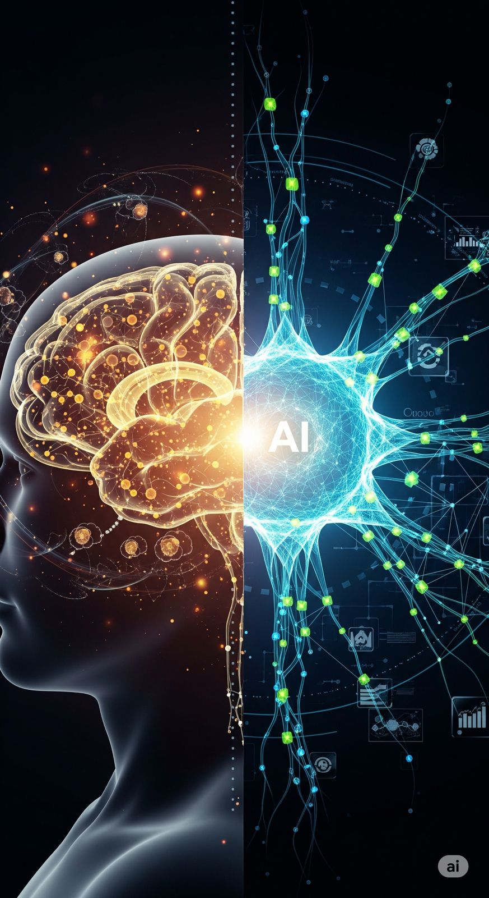

Sustainable AI
IEEE ICNGCS-2025
Eco-Transformers: Carbon-Efficient and Accelerated Inference through Self-Pruning and Activation Freezing in Large Language Models
Large Language Models require immense computational power, leading to high latency and heavy carbon emissions. We introduce Eco-Transformers, a novel runtime optimization framework implementing PyTorch forward hooks that dynamically masks low-magnitude weights and freezes near-zero activations at runtime without requiring retraining or modifying model architecture. Evaluated on Falcon-RW-1B, GPT-Neo-1.3B, OPT-1.3B, and GPT2-XL, Eco-Transformers consistently reduced CO2 emissions by up to 58% and accelerated inference by 56% while preserving BLEU, ROUGE-L, and perplexity scores.


 TensorFlow
TensorFlow Flask
Flask OpenAI API
OpenAI API Pandas & NumPy
Pandas & NumPy scikit-learn
scikit-learn FAISS
FAISS Docker
Docker Google Cloud
Google Cloud AWS
AWS Firebase
Firebase Supabase
Supabase PostgreSQL
PostgreSQL SQLite
SQLite Git & GitHub
Git & GitHub Python
Python TypeScript
TypeScript Kotlin
Kotlin Flutter & Dart
Flutter & Dart Linux Shell
Linux Shell Postman
Postman